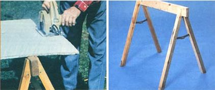
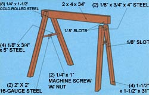

When you need to cut up a batch of lumber - whether it be plywood or studs - there's just no substitute for a sturdy pair of sawhorses. Unfortunately, until that moment arrives, the four-legged stands seem to be forever in the way of whatever project you're working on. The fact is that - even if they're stacked, hung, or stored on end - assembled sawhorses take up a lot of valuable space.
MOTHER's own Emerson Smyers was confronted with just such a problem in his workshop . . . and decided to solve it by designing a set of folding sawhorses, which can be stored snugly against the wall when not being used. The wooden "steeds" that resulted from our research director's dilemma work like a pair of scissors which - when locked into position - firmly clamp a 2 X 4 crosspiece. Then, once your cutting job is done and a homemade hinged bracket on the sawhorse is released, each pair of legs will collapse to a size barely larger than a single 2 X 4!
Of course, building a folding sawhorse is slightly more complicated than tacking together a standard cutting stand, but the construction can still be accomplished using basic tools - including a handsaw, a saber saw, and a drill with a 1/4" bit - and a minimum of materials. For each horse you'll need to collect only an eight-foot length of 2 X 4, 30 inches of 1/8" X 3/4" steel strap, a foot of 1/4" cold-rolled steel rod, two 1/4" X 1 " machine screws with nuts, a 2" X 4" piece of 16-gauge steel, and a small piece of 100-grit sandpaper.
Begin construction by dividing the 2 X 4 into two 31" lengths (from which the legs will be formed), leaving a 34" section for the crosspiece. Next, rip each of the 31" boards down the 3-1/2" dimension to produce four approximately 1-1/2"square legs. At this point, you can trim one end of each support at a 75° angle so it will rest flush with the floor when in use, but don't trim the other end until later in the construction process.
The legs are connected in two places - at points 3-1/4 inches and 11-1/2 inches from the top of each 1-1/2" square section - with brackets formed from 1/8" X 3/4" steel strap and held in place by 1/4" steel rod. While the upper connection is a single 4"-length of metal, the lower bracket is formed from two 5" pieces that are overlapped and bolted together - with a 2" X 2", 16-gauge steel stop folded over the pivot and sandwiched by the bolt and nut - to allow the legs to open and lock into position.
Slots must be cut into the inside of each leg at all four bracket mount points, so the 1/8"-thick metal supports can be slipped in and pinned into place and so the bottom bracket can fold up. If you happen to have a table saw, the lower slots can be made by simply placing the wood over the retracted blade of the saw and then gradually raising the cutter to slice a groove slightly more than halfway through the board. (The same basic cut can also be accomplished with a saber saw and some hand work.)
However, each upper recess should be made by first drilling 1/4" holes in the center of the inside face, 3/4 inch above and below the pivot point for the steel. Then just cut out a slot between the two holes, so that the strap can be inserted and pinned into position.
Once you've bored out the pivot holes in both the legs and the steel straps, hammer 1-1/2" lengths of 1/4" rod in place to secure the pieces and lay the assembly flat on your workbench. Now place the legs at full extension, set the end of the 2 X 4 crosspiece against the legs at the upper pivot, and mark the cut necessary to pinch the board in the wooden "jaws". (Hint: When you shape the upper angle, be conservative about the amount of material removed. You can always file the surfaces down to achieve the appropriate fit.)
To put the finishing touches on your hideaway sawhorses (they work best in pairs), just cut a slot two inches from each end of the 2 X 4's (so that the top metal strap on each pair of legs can slide into the groove), glue some sandpaper to the clamping surface of each support, and lock the pieces into position. Now you're ready to trim wallboard, section plywood, or cut lumber with ease . . . and when the job's done, the stands can be folded up and stashed away for future use.
|
 |
 |
|